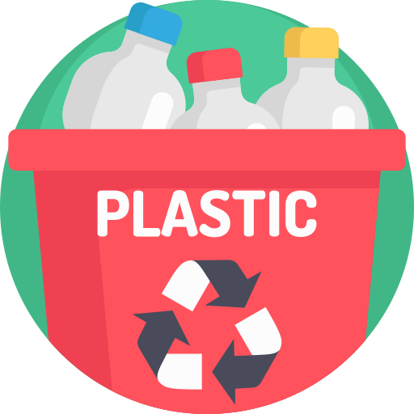
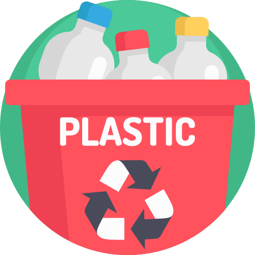

×
Even though there have been great efforts to promote and encourage
recycling and composting in the past decade, there could be better
support on educating the public about how to recycle/compost. This is
not just about having a list of items above each bin of three-stream
waste bins. Even if something is considered recyclable, for example, a
specific item might not be if it was not properly cleaned out.
In general, if an item can be recycled or composted, it is considered
better to recycle the item rather than compost it since recycling an
item reduces the amount of new natural resources that need to be
extracted. However, even if an item is recyclable—such as a plastic
bottle, for example—it has to be empty, clean, and dry. If you throw
your boba cup with some tapioca balls and even a little bit of milk
tea into the recycling bin, not only is the cup no longer recyclable
but everything that the remaining liquid spilled onto would also no
longer be recyclable. If you take one thing away from this pop-up,
please remember to empty, clean, and dry anything you put into the
recycling bin. In addition, sending non-recyclable items into
recycling centers could end up in damaging their machines; for
example, plastic bags and greasy pizza boxes could shut down some
recycling machines for days. Though recycling is good, it’s only good
if you do it right.
Though recycling is good, there is a limit to how many times some
material can be recycled and reused (for example, paper can usually
only be recycled 5-7 times), and this is when composting comes in
handy. In California, ⅓ of all landfill waste was actually
compostable. Some people think that this is not a big issue, since
wouldn’t it just decompose in the land anyways? Yes, it would
decompose—in a bad way. Not only does organic waste in the landfill
take up space for other trash that cannot be recycled or composted, it
also emits methane gas while decomposing, which is a big source of
greenhouse gas emission today. Throwing away organic waste into
compost bins rather than normal trash bins and properly degrading the
waste would eliminate these greenhouse gases emitted to the
environment.
Sources: https://www.calrecycle.ca.gov/climate/organics
https://www.epa.gov/sustainable-management-food/reducing-impact-wasted-food-feeding-soil-and-composting
https://www.dakotavalleyrecycling.org/recycling-news/328-when-is-composting-better-than-recycling
https://ecology.wa.gov/recycleright


 
